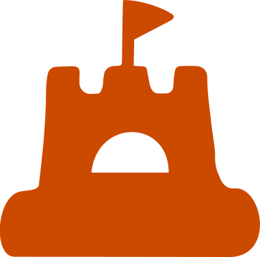
and Silicates
A next generation global platform bringing together stakeholders to build a future where sand and silicates are sourced, used and produced responsibly
The Coalition is the only organisation dedicated to responsible sourcing and production practices for sand and silicate materials. For companies and organisations acting on these materials, we provide the legitimacy, the shared knowledge and the practical foundation to do so credibly.
We work across three roles. We offer a credible responsibility commitment signal for these materials. We build the shared knowledge base and technical supports that make responsible practices clearer, more defensible and less costly. Our work is grounded in the OECD Due Diligence Guidelines and extends into positive contributions that go beyond risk avoidance. We work with standards bodies as a connector, critical friend and resource, helping them bring sand and silicates into their frameworks so that responsible action by our members can be recognised.
Our approach is built around three emerging principles. See the materials and the people behind them. Secure them and the benefits they generate, for people, communities and ecosystems. Share what you learn so that others can do the same.
We are not a standards body. We are the dedicated knowledge and practice platform for this material family. Designed to work with the people who source, produce, regulate and depend on these materials every day.
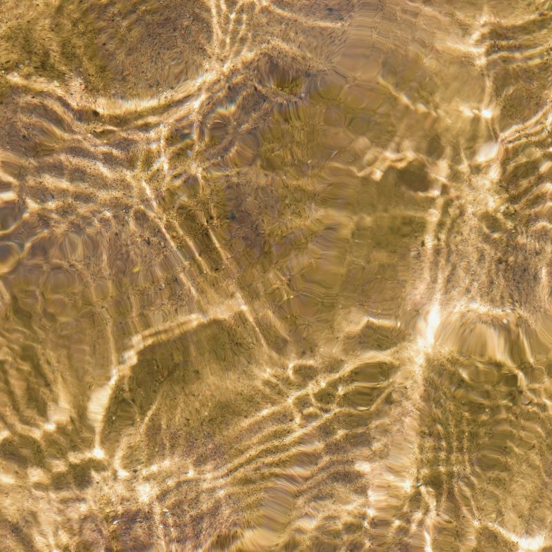
We need to restore regard for these materials.
That begins by addressing their invisibility.
Our Founder Members
Our Founder Members built this platform. They brought operational knowledge, research, funding and hard questions, and co-designed the Coalition's purpose, governance and programme of work.
We are grateful to each of them and to the dozens of organisations who contributed insight along the way.
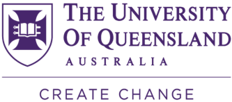
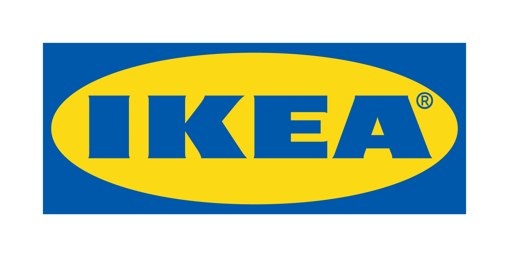
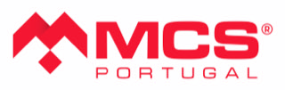
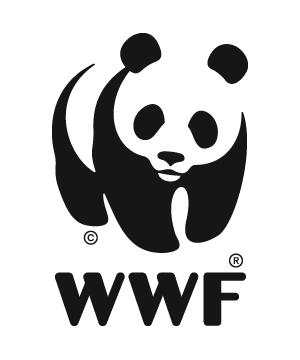
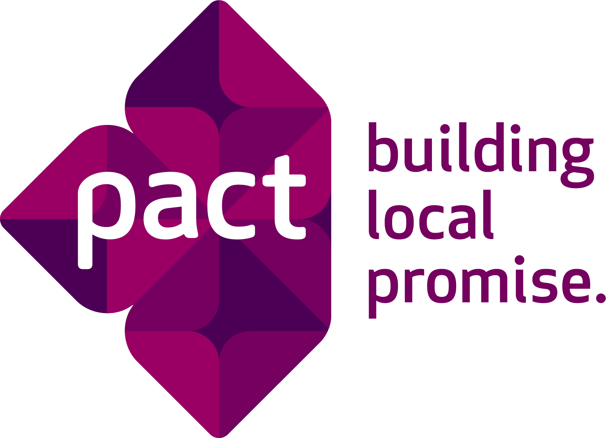
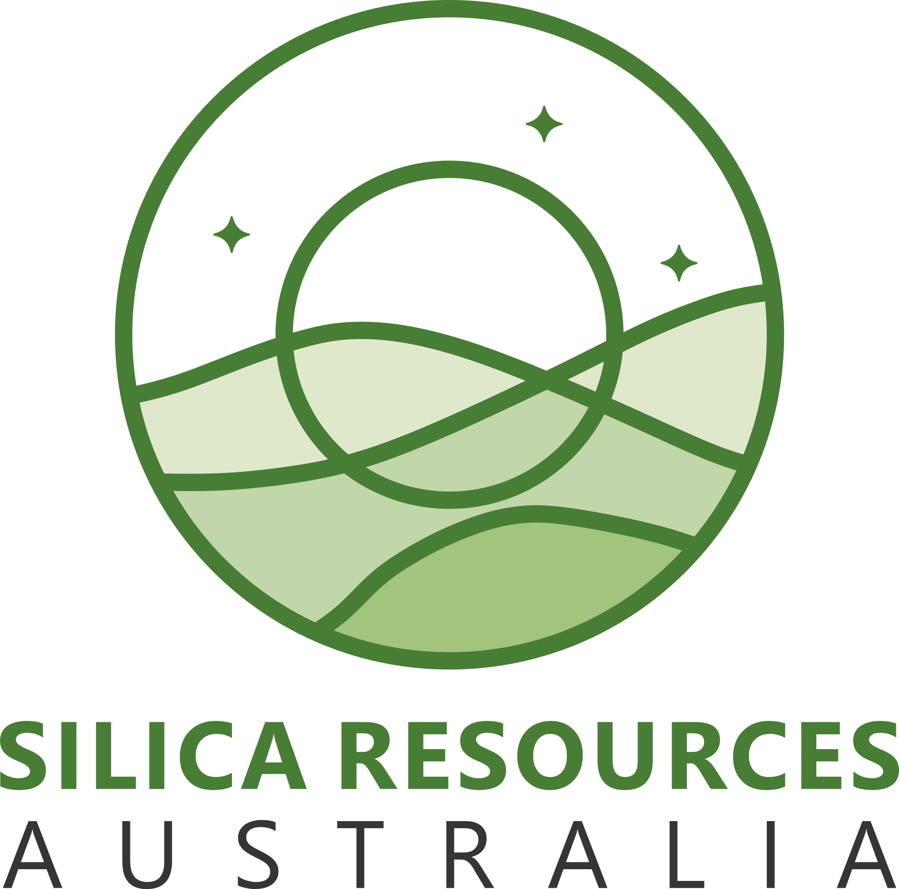
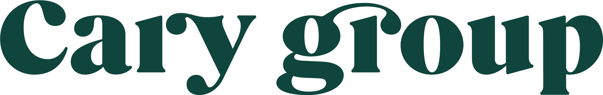
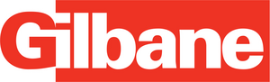
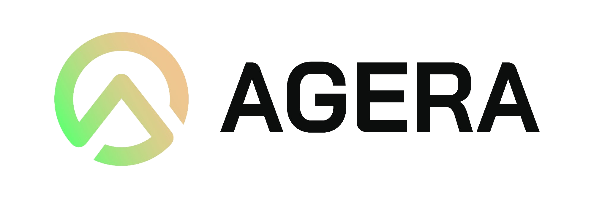
Join us
If you source, produce or govern sand and silicate materials, we'd like to work with you.
Any organisation that joins in 2026, our founding year, is recognised as a Founder Member, with a direct hand in shaping what responsible practice looks like for these materials. Those that engage now shape what the field becomes. Those that wait will respond to definitions written by others.
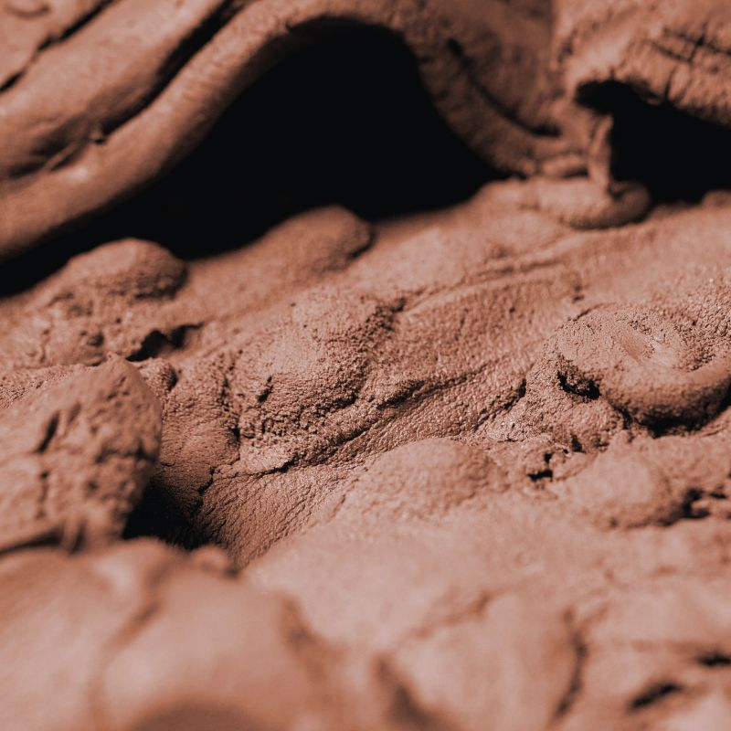